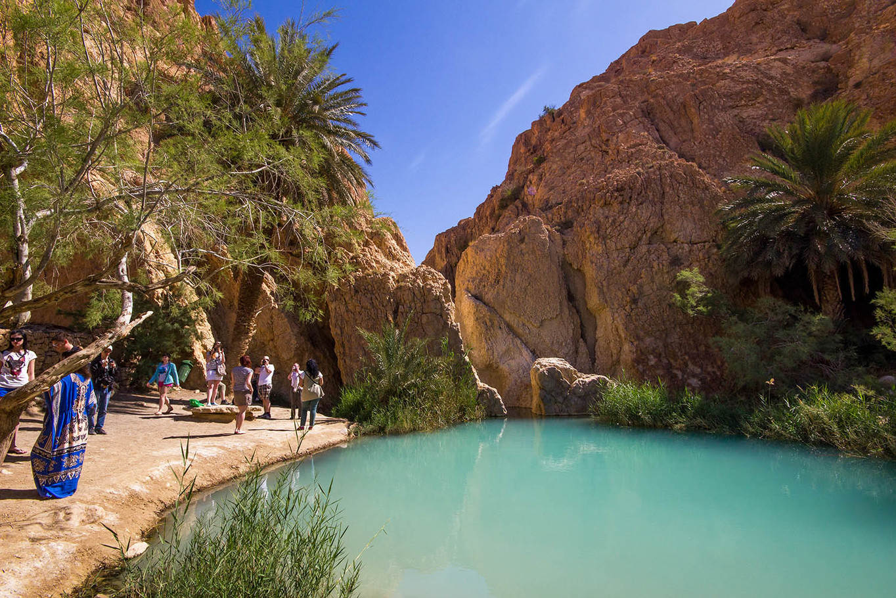

2 Napos Saharai Túra
Ahogy a neve is mondja 2 napig tartott és beljebb mentünk forróbbnál forróbb területekre is. Az első napon egy oázishoz mentünk ahol életem egyik legjobb frissen helyben facsart narancs levét ittam, még szüleim beszéltek a túra vezetővel. Ahogy a pálma fák kikandikálnak a homok dünék közül úgy lehetett csak észre venni. Viszont a nagy szépségnek van rossz oldala is a helyi mellékhelyiség nem volt több egy lyuknál a padlón (homokon) ami körbe volt falazva fa deszkákkal. Mentünk Jeepekkel is ami nagyon vicces és élmény dús volt hiszen a vezetők direkt a legnagyobb homok buckákról vetteték le magukat miközben mi az utas térben kapaszkodtunk.

Este mikor a szállodába értünk akkor annyira szerettem volna fürdeni az ottani medencében hogy muszáj volt vennünk egy rendkivül rossz minőségű fürdő ruhát, de legalább a víz jó volt. Másnap egy érdekes helyre mentünk a túra busszal. Egy hegy oldal szerűségbe vájták be magukat az ottaniak és meg lehetett nézni hogy milyen a lakásuk, és életmódjuk. Onnan tovább a Star Wars egyik forgatási helyére érkeztünk ahol nagyon meleg volt mivel bármerre csak néztünk homok volt. Ezen a ponton nővéremnek nagyon melege volt és már szédült is annyira nem bírta.

Sivatagi Rózsa
Szerencsére jártunk egy só tó szerűségnél is ami elképesztő volt a maga szépségében, és érdekes hiszen ember a sóról azt gondolná hogy szárít és ízesít csak, de egy úgy nevezett "Sivatagi rózsát" is képes képezni. Nagy szerencsénk volt mert drágán adták, de ahogy közelebb léptünk a tóhoz láttuk hogy ott hevert egy csak a lábunk előtt mint egy kavics, egy meglehetően szép és formás kavics. Ezen kivül rengeteg filmet forgattak itt többek között a „Csillagok háborúja”-t, „Az angol beteg”-et, vagy „Az elveszett frigyláda fosztogatói”-t.


Meduzával való ismerkedés
Egy normális napnak indult, reggeliztünk, előkészültünk a strandolásra a tengerpartján és tök jó volt a frissítő víz egy kis pihenés után. Viszont amikor ki jöttünk volna a vízből akkor hasalva jöttem még és voltam oly ügyes hogy a hátsó feltájamhoz hozzá ért egy arra sodort halott meduza. Szerencsénkre nem volt komoly mert csak viszkedett, meg kérdeztük az ott dolgozokat hogy ez veszélyes vagy mit kéne most tennünk. Végül kaptunk egy kis tányérnyi paradicsomot a csípés helyére hogy enyhítse a viszkedést és 1 óra múlva már ment a nap tovább gond nélkül.
A Tengerpart
Most a Sentido Rosa Beach nevű szállodáról írok amely Monastirban található, és a tengerpart amely ott található nagyon puha homokú és minden este foglalkoznak vele hogy az is maradjon. Emelett rengeteg program is várt minket ott, két tökéletes példa erre a Tini disco ami minden este volt és a reggeli utáni torna a medencében.
Az étel rendkivül finom volt fölleg hogy annyit szedhetünk a kirakott ételek közül amennyit csak kivántunk. Itt ettem életemben először rákot és cukor dinnyét és mindkettőt imádom.
Quadozás
A quadozás rendkivül élvezhető volt még ha nagyon féltem is egy ideig, mert édesapámmal véletlen felborultunk a homokban. Ez annak volt köszönhető hogy rosszul döltem egy éles kanyarban és mint egy kis fa kocka odébb borultunk. Nem volt semmi komolyabb sérülés csak nagyon megijedt főleg édesapám hogy valami bajom esett pedig csak egy pici seb lett a térdemen. Vissza gondolva sokkal viccesebb és egy fontos emlék nekem.
Másodjára megnyugodtam és anyukám mögött ültem még ő vezetett. Most egyedül az volt az ijjesztő benne hogy volt amikor kettő kaktusz fal között kellett mennünk ami kellemetlen tud lenni ha csak egy picit is odébb húzod a kormányt.
Tevegelés
A tevegelés számomra és édesanyám számára enyhén szólva kellemetlen volt, hiszen folyamatosan az az érzés fogott el minket mintha csúsznánk le a nyereggel le valamelyik oldalra. Vissza fele inkább a lovas kocsiba ültünk és én vezethettem a lovat amely megint csak egy hatalmas élmény volt ha nem is a tevegelés része akkor az hogy beöltöztettek minket és hogy a szaharában voltunk és mindenhol csak puha homok volt.